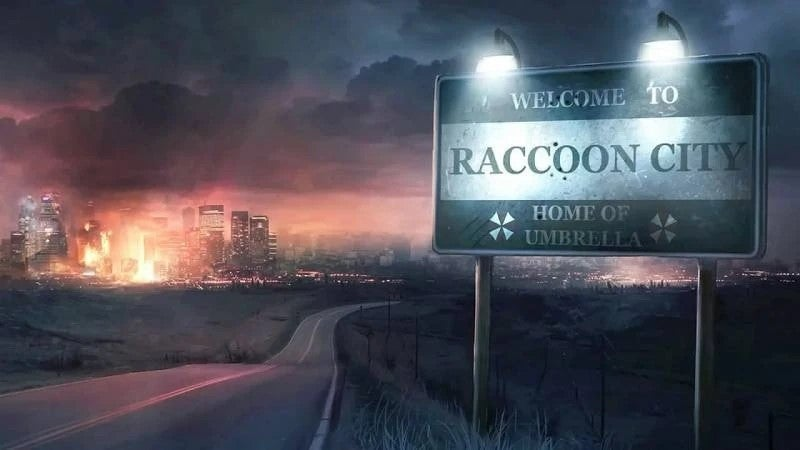
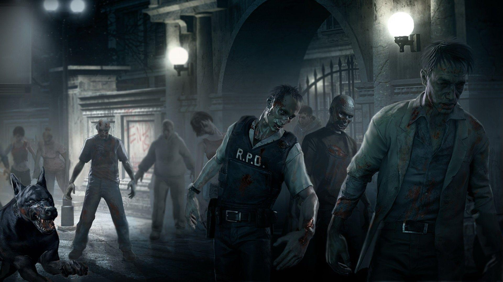

Raccoon City era una ciudad ubicada cerca de las montañas Arklay. Durante mucho tiempo fue una comunidad tranquila y gran parte de su desarrollo estaba relacionado con la Corporación Umbrella, una importante empresa farmacéutica que tenía varias instalaciones cerca de la ciudad.
Todo cambió cuando una infección comenzó a extenderse entre sus habitantes. En poco tiempo, las calles se llenaron de personas infectadas y criaturas peligrosas, provocando que la ciudad se convirtiera en uno de los lugares más importantes de la historia de Resident Evil.

Umbrella era una compañía farmacéutica conocida por fabricar medicamentos y otros productos relacionados con la salud. Sin embargo, detrás de esta imagen pública escondía laboratorios secretos donde realizaba experimentos con virus y armas biológicas.
Muchos de sus experimentos tenían como objetivo crear organismos más fuertes y peligrosos. Las investigaciones de Umbrella terminaron causando varios accidentes y fueron una de las principales razones del desastre ocurrido en Raccoon City.
El Virus-T fue uno de los principales virus desarrollados por Umbrella. Al infectar a una persona podía provocar graves cambios en su cuerpo, afectando su comportamiento y convirtiéndola poco a poco en un zombi.
El virus también podía afectar a diferentes animales y provocar mutaciones. Cuando logró llegar a Raccoon City, la infección se extendió rápidamente y gran parte de la población terminó siendo afectada.

El Virus-T no solamente provocó la aparición de zombis. También causó mutaciones en animales y otras criaturas, mientras que Umbrella creó diferentes monstruos mediante sus experimentos.
Entre los enemigos más conocidos se encuentran los Cerberus, perros infectados muy agresivos; los Lickers, criaturas rápidas con grandes garras y una larga lengua; y los Tyrants, enormes armas biológicas creadas por Umbrella.